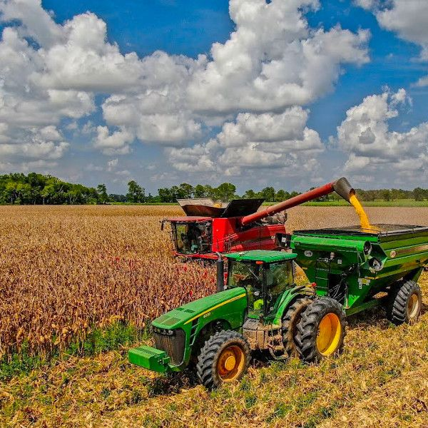

O Agronegócio – ou o Agro, como passou a ser chamado – é a denominação dada à cadeia produtiva relacionada à agricultura e à pecuária, incluindo todas as culturas agrícolas e espécies animais de produção, como o gado de corte e de leite, suínos, aves e até peixes.
é uma Feira de inovação, tecnologia agropecuária e geração de negócios
agronegócio vai além da alimentação. Ele passa pela produção de insumos até sua comercialização em diferentes vertentes. É do campo, por exemplo, que vem o algodão, essencial na confecção de roupas e muitos outros produtos que são essenciais em nosso dia a dia.
O agricultor, também conhecido como agropecuarista ou produtor rural, é um profissional crucial na agricultura.
